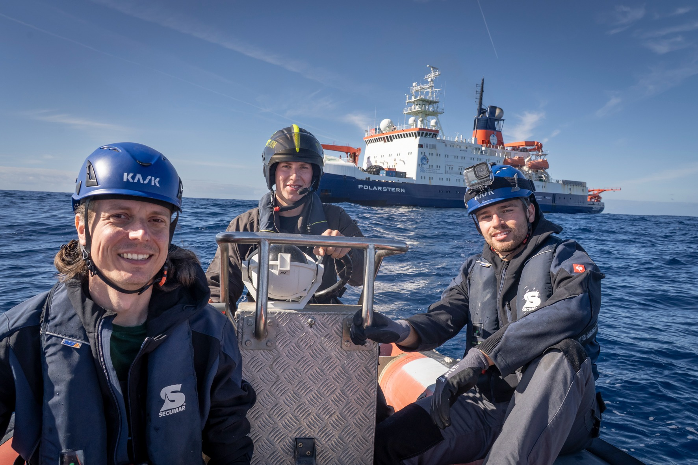
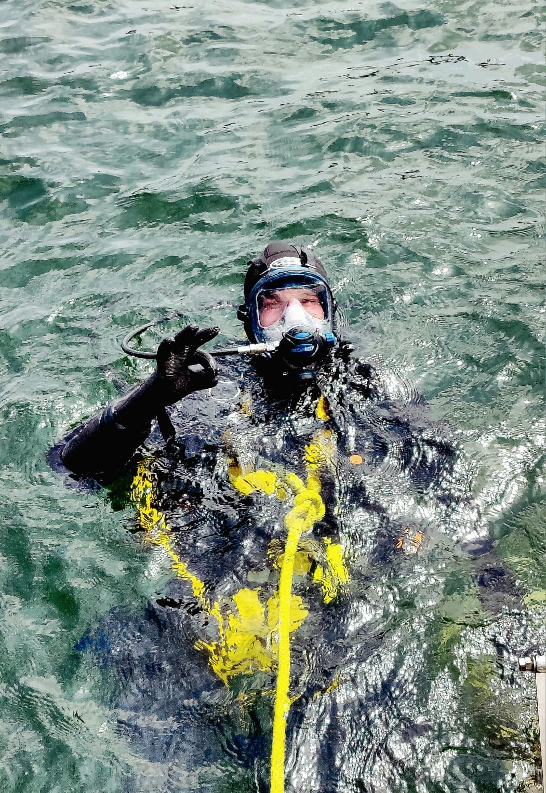
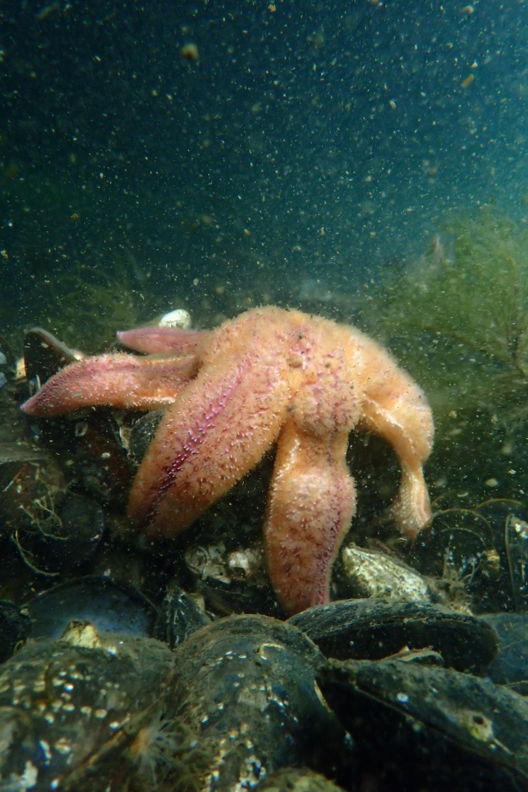
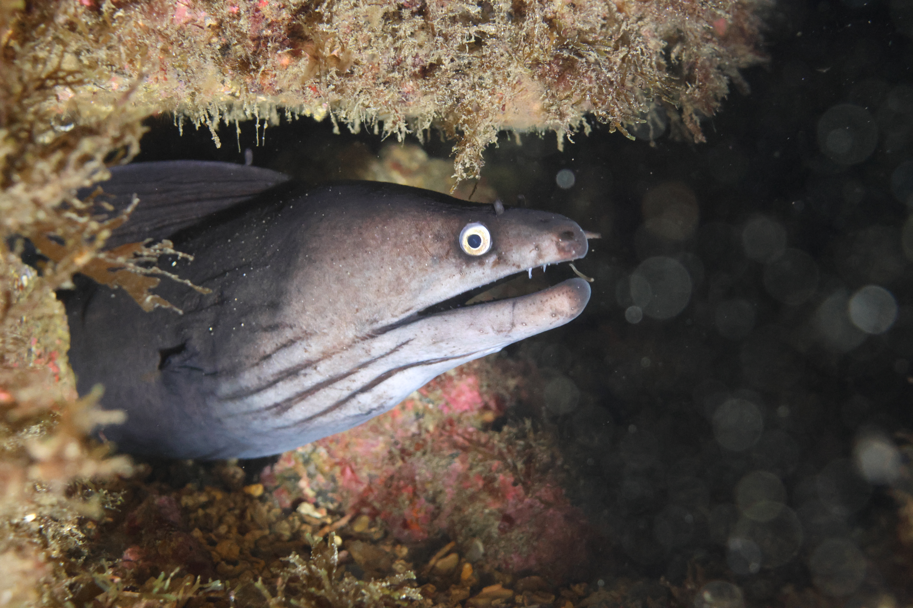
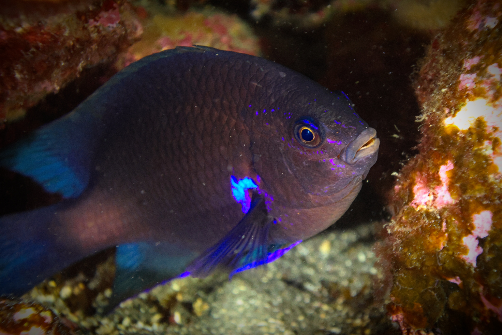
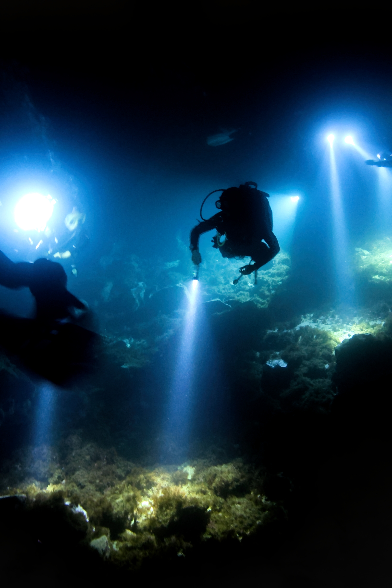

Computer vision & monitoring
Image annotation, model training, spatial analysis and emerging digital workflows for scalable marine monitoring.
I’m Vinzent Ferfers, a biological oceanography M.Sc. student working across scientific diving, marine monitoring, underwater imaging and computer vision.
Field science, ecological monitoring and technology for understanding marine environments.
My background combines biological oceanography with hands-on marine fieldwork. I’m interested in linking scientific diving and underwater observation with reproducible monitoring methods, image-based data and computer vision. My experience ranges from ecophysiology and microbiology to research-vessel operations, habitat documentation, ecological surveys and automated benthic assessment.
Image annotation, model training, spatial analysis and emerging digital workflows for scalable marine monitoring.
Underwater surveys, documentation, reef-health monitoring, sampling and operational scientific-diving work.
Biological oceanography, research-vessel operations and oceanographic observations from the water column to the seafloor.
I work with image-based monitoring workflows that connect manual ecological annotation, machine learning, high-performance computing and geospatial analysis. My current work in Sweden focuses on turning benthic imagery into reproducible information that can support marine monitoring and management.
I participated in an LST project for Länsstyrelsen Skåne (County Administrative Board of Skåne), using the SUBSIM computer-vision workflow integrated into Digital Twin Ocean. The work focused on analysing underwater transect imagery to quantify algae coverage and translate image observations into spatial monitoring products.
Alongside image-based monitoring, I participated in environmental DNA (eDNA) field sampling along the Swedish coast, collecting water samples and scrapings from submerged settling plates. This complements visual and image-based monitoring with molecular methods for detecting biological signals in the marine environment.
Scientific diving is a core part of my fieldwork. I combine underwater observation and sampling with project planning, risk assessment, documentation and team coordination, linking what happens below the surface directly to ecological data.

Scientific Diver (KFT), with later responsibility supervising scientific-diving operations.

Risk assessments, dive planning, project preparation and coordination of scientific-diving teams through my role supervising scientific-diving operations.

Underwater observations are documented through photography, video, sampling and structured monitoring methods so field observations can feed directly into later analysis.

Experience includes population-disease and reef-health assessments, underwater documentation, seagrass-meadow pore-water sampling, underwater infrastructure work and archaeological documentation of an underwater section of a UNESCO World Heritage Site.
My open-ocean experience combines research-vessel operations with hands-on oceanographic sampling and observation. During the WASCAL Floating University and other cruises, I worked with instruments and workflows that connect physical, biological and atmospheric observations across the marine environment.

FYORD / WASCAL Floating-University experience aboard RV Polarstern (PS 154/2 / WASCAL-IV), combining training, shipboard operations and practical oceanographic fieldwork.
Photo: © Barbara Dombrowski
Hands-on experience with CTD operations and Multinet deployments for sampling and observing the structure of the open-ocean water column.
Participation in ARGO-float deployment and weather-balloon operations, extending observations beyond the ship and into autonomous ocean-atmosphere monitoring.
Experience with multibeam-based seafloor mapping as part of broader research-vessel survey operations and oceanographic data collection.
Field experience aboard RV Polarstern, RV Alkor and RV Littorina, alongside additional offshore sampling tools including Van Veen Grab, Box Corer, drop-down camera, dredge and mini-RUV.
Study, research, fieldwork, scientific diving and marine projects have taken me across different ocean regions and research environments. Explore the locations below.
Hover over a pin for details, or tap one on mobile.
My B.Sc. research at GEOMAR combined experimental ecophysiology, microbiology and field monitoring to investigate Sea Star Wasting Disease in the common sea star Asterias rubens under different temperature conditions.
I simulated future ocean temperatures and measured immune activity using flow cytometry and coelomocytes, while also investigating Vibrio densities in seawater and coelomic fluid. In parallel, I helped monitor local sea-star populations for visible SSWD symptoms using snorkel- and camera-based surveys.
I contributed to field data collection and analysis for the co-authored study Sea star wasting disease in the keystone predator Asterias rubens from the Baltic Sea.


Research, internships, scientific-diving roles, monitoring projects and representation experience from my current CV.
Subsea computer-vision model training for benthic habitat assessment and automated monitoring, including BIIGLE annotation, YOLO workflows, LUMI computing and QGIS-based spatial products.
Science communication and outreach, including lectures on light pollution, microplastics outreach events and development of social-media strategies for public engagement.
Risk assessments, project planning and coordination of scientific-diving teams.
Sea Star Wasting Disease research spanning ecophysiology, microbiology, flow cytometry and field monitoring of local sea-star populations.
Established and maintained a full-life-cycle rearing system for Lytechinus pictus, including seawater manipulations, long-term culture maintenance and scientific exchange with Scripps Institution of Oceanography.
Marine field experience including participation in the Reef Check programme for coral-reef health monitoring.
Scientific-diving operations, underwater monitoring, documentation, sampling and operational field support.
Representation and committee work involving budget allocation, programme evaluation, faculty appointments and student-council decision-making.
Underwater photography is part of how I document marine environments, field experiences and the organisms I encounter while diving. Scroll through a selection of images from below the surface.
.jpeg)




.jpeg)
.jpeg)
Drag, swipe or use the arrows to move through the gallery.
A compact overview of the skills listed in my current CV.
GEOMAR / Kiel University, including an ERASMUS+ semester at the University of the Azores and international field and project experience.
Kiel University, including an ERASMUS+ semester at the University of Aberdeen and a DAAD-supported internship with Luminocean in Indonesia.
I’m interested in marine monitoring, scientific diving, open-ocean fieldwork, subsea imaging and computer-vision applications for ocean research.
For privacy, my street address and phone number are intentionally not displayed on this public page.